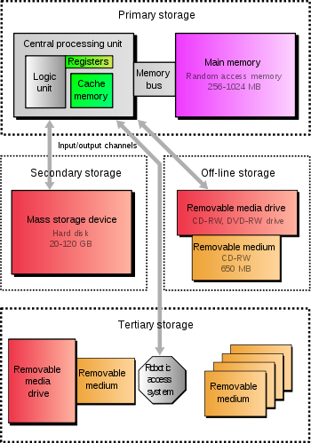

Persistent storage is any data storage device that retains data after power to that device is shut off. It is also sometimes referred to as non-volatile storage persistent storage
It is often necessary to store the value of the fields of an object to disk and then, later, retrieve this data. Although this is easy to achieve without relying on serialization, this approach is often cumbersome and error prone, and becomes progressively more complex when you need to track a hierarchy of objects. Imagine writing a large business application, that contains thousands of objects, and having to write code to save and restore the fields and properties to and from disk for each object.
Hard disk drives and solid-state drives are common types of persistent storage.